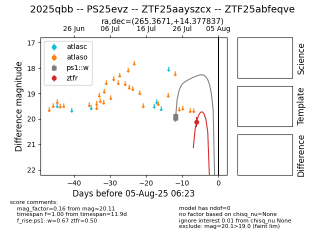

Target 2025qbb at 2025-08-05 07:33, see:
FINK: fink-portal.org/2025qbb
Lasair: lasair-ztf.lsst.ac.uk/objects/2025qbb
ALeRCE: alerce.online/object/2025qbb
TNS: wis-tns.org/object/2025qbb
YSE: ziggy.ucolick.org/yse/transient_detail/2025qbb
alt names
ZTF25aayszcx (ztf)
ZTF25abfeqve (fink)
2025qbb (tns,yse)
PS25evz (panstarrs)
coordinates:
equatorial (ra, dec) = (265.3671,+14.37784)
galactic (l, b) = (38.3871,+21.86129)
photometry
last ps1::w=19.89, ztfr=20.11
4 ps1::w, 1 ztfr detections
